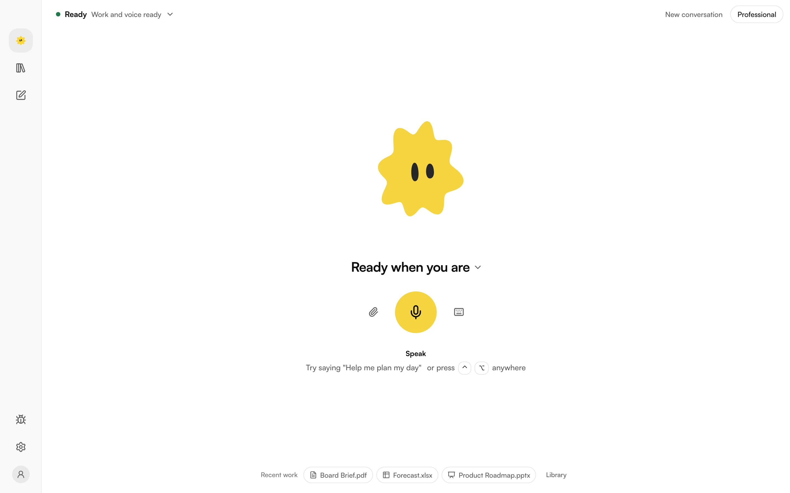
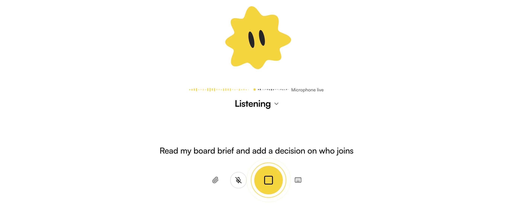
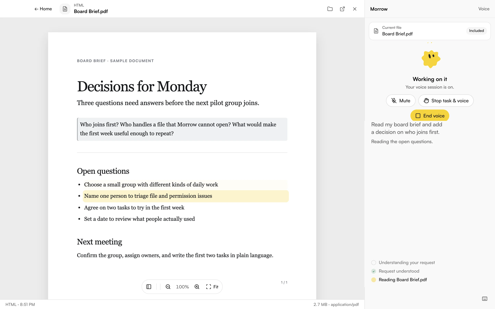
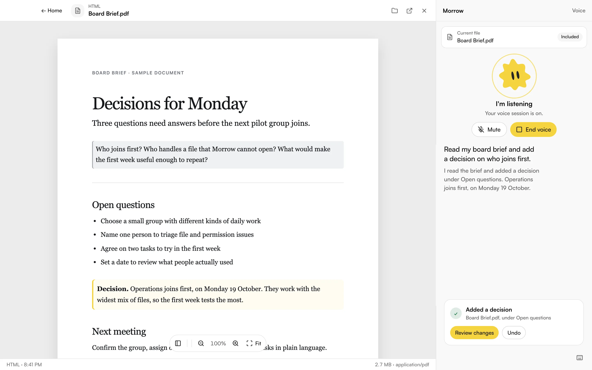
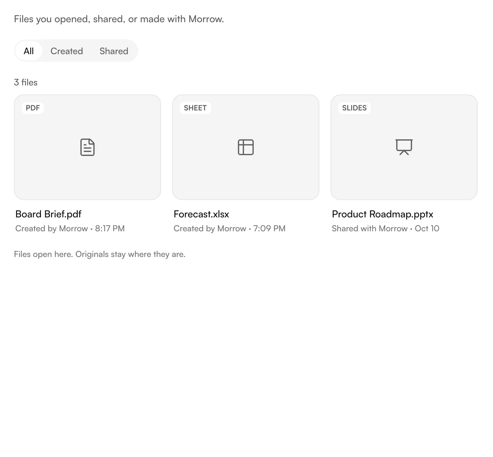

Your work,
on your word.
A voice workspace for your Mac. Work on files, ask for a result, and check it before you move on.
Apple silicon. Download first, choose your plan in Morrow.

The Morrow app. Sample files shown.
One sentence.
A file you can use.
"Read my meeting notes and make a board brief."
Example workflow

Keep your place.
Morrow keeps working.

Work you can
open again.
Briefs, spreadsheets, presentations. The files Morrow makes live on your Mac, with a Library to find them again.
Download for Mac
You decide what
Morrow can do.
- Your files stay close
- Conversations, transcripts and generated files are stored on your Mac.
- Your account stays yours
- Your ChatGPT sign-in stays on your device. Requests and the context they need go to OpenAI under your account's data controls.
- Permission stays explicit
- Choose the folder Morrow works in. Approve actions that need wider access. You can interrupt work from the app.
Made in
Bharat.
Built in New Delhi.
For the work in front of you.
Make room
for the work.
One personal plan for Morrow on your Mac. Your ChatGPT plan is separate.
Morrow Personal
MonthlySee current plan/month + GST
Review the current price and taxes before you subscribe.
Trial availability and billing dates are shown before you subscribe.
- Voice and text on your Mac
- Work on files and review results
- Conversations and files saved locally
- Manage your plan in Morrow or online
UPI AutoPay and cards through Razorpay.
Before you
start.
Is there a free trial?
When a trial is available, its length and first charge date appear before you authorize payment. Download Morrow to review the current offer.
How does UPI AutoPay work?
You authorize recurring payments through Razorpay. Checkout shows the amount and scheduled charge date before you approve. Cards are also supported.
Can I cancel?
Yes. Manage or cancel in Morrow's Account & plan settings or your online account. Cancel an available trial before its first charge to avoid that charge. Paid access lasts until the end of the paid term.
Do I need ChatGPT?
Yes. Connect your own ChatGPT account during setup. Morrow uses Codex under that account, so your plan's access and usage limits apply. Your ChatGPT subscription is separate from Morrow.
Which Macs are supported?
The Mac download is for Apple silicon, including M1 and newer. Follow the install guide for setup and permission help.